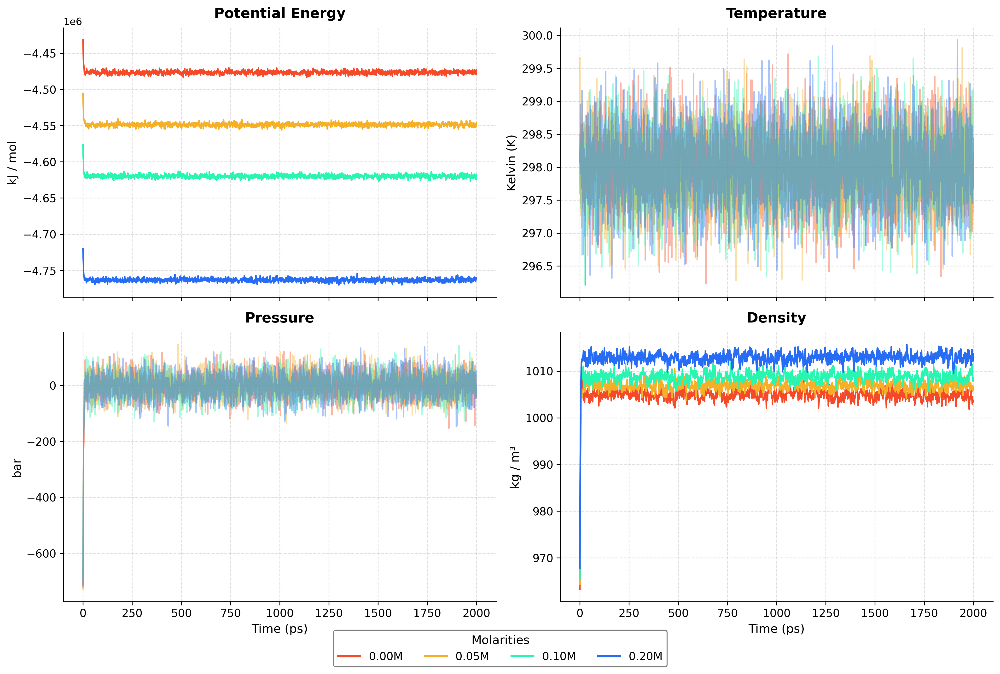

Potential of Mean Force Between Like-Charged Colloidal Particles
Investigating coarse-grained charged colloid models
Jakob Wallner & Stephan Haag
University of Stuttgart
Advanced Simulation Methods Lecture
26.06.2026
Reference Plots
